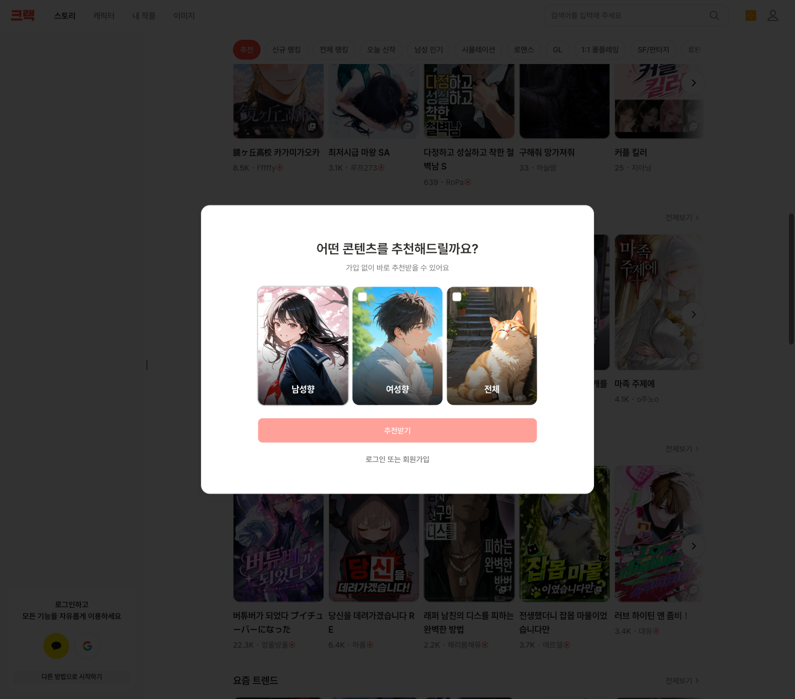
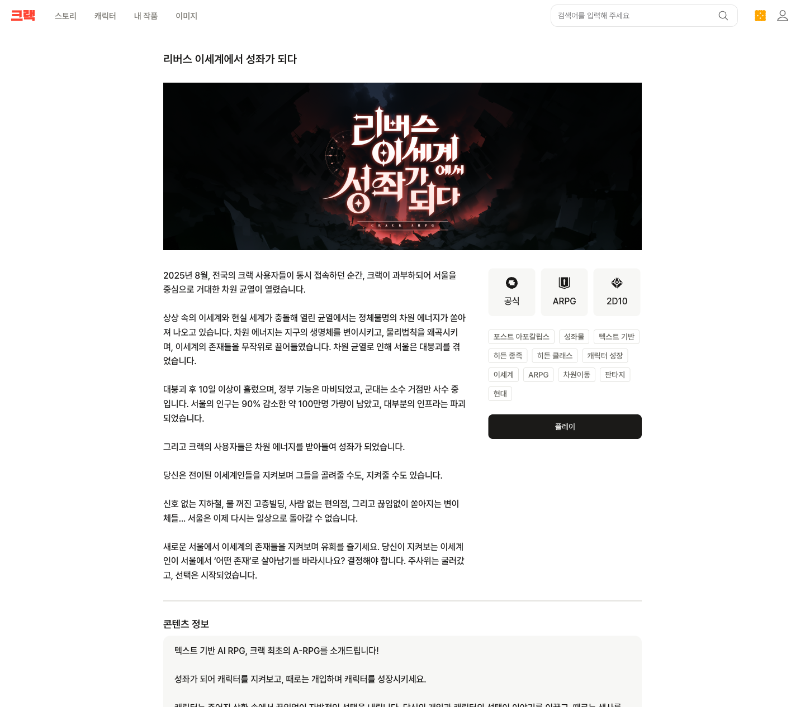

Wrtn Technologies
把 AI 做成可玩的故事
韩国第一 C 端 AI 公司。从写作工具到"孤独经济"娱乐巨头的两段式转型—— 不自研大模型，靠多模型编排 + 互动叙事，2025 营收暴涨 15 倍，正进军美国、瞄准 2028 IPO。
TL;DR
一句话定性
Wrtn 是典型的 "应用层 / 模型聚合 + 编排" 公司——不自研基础大模型，调用 OpenAI、Anthropic、Google 三家 API 做多模型路由。生产力主应用（뤼튼）以 OpenAI（Azure，GPT-4→GPT-5+o1） 为骨干；角色聊天（Crack/Kyarapu）以 Anthropic Claude 为骨干，并引入 Google Gemini。
商业上靠"孤独经济 + 互动叙事"杀出：用户日均用 ~2 小时（对标 Netflix/YouTube），付费留存 >70%。走了一条 写作工具(2021) → 免费多LLM门户(2023) → AI娱乐(2024起) 的两段式 pivot。
✓ 确证 多源一致 ~ 单源/社区 谨慎采信 ✗ 已证伪 别引用 — 全文按此三档标注。
EVOLUTION
发展时间线 · 两段式转型
写作工具 → 多 LLM 门户 → AI 娱乐。每个节点均来自韩文一手源（公司公告 / 韩国财经媒体 / 创始人专访）交叉验证。
PORTFOLIO
产品矩阵 · 四大产品
Wrtn AI 뤼튼
韩国 · 生活/生产力 AI 超级 App。多模型路由门户，免费引爆 C 端流量。
Crack 크랙
韩国 · AI 互动叙事。据用户选择实时生成 小说+图片+音频，用户是故事主角。
Kyarapu キャラぷ
日本 · 同 Crack 结构。货币用 Gold（1 Gold = 1 日元）。
OOC US 2026.4
美国 · "Playable Anime"。复制韩日已验证模式，瞄准动漫 + TRPG 群体。
Crack 内部结构（实地浏览 crack.wrtn.ai）
顶部 4 模块
스토리 故事 · 캐릭터 角色 · 내 작품 我的作品 · 이미지 图像生成
平台货币 크래커 Cracker，新手任务送 1750 个。充值 + 对话模式分档定价，成人 Tab + 青少年保护政策齐备。
故事板块 14 种题材

FLAGSHIP · 元叙事
旗舰原创 A-RPG「在逆向异世界成为星座」

리버스 이세계에서 성좌가 되다
"设定 2025 年 8 月，全韩 Crack 用户同时在线导致 Crack 这个 App 过载，在首尔炸开次元裂缝——异世界生物涌入，首尔崩坏人口锐减 90%，而 Crack 用户们吸收次元能量变成『星座』（韩网文里的高维观测者梗）。你作为星座，观察并介入异世界人的命运。"
妙在自我指涉：游戏世界观里，灾难的起因就是"这个 App 本身太火"。AI 角色自主做选择，你的介入 + 角色选择共同推进剧情、甚至决定生死。
CPO 自述产品定位："介于看故事和玩游戏之间，AI 像 D&D 的地下城主（dungeon master）。"
AI STACK · 你重点要的
用什么模型 🔑
不自研基础 LLM，无 fine-tune / RLHF / 继续预训练证据。本地化手段是系统提示词 + 人设 + 记忆系统 + temperature 调参，不是训练。按产品分两套骨干：
主应用 뤼튼 / Wrtn AI
+ AI Foundry + Content Safety
+ Claude 3.7 + Gemini 2.5
角色聊天 Crack / Kyarapu
韩国本土模型 & 路由演进
- Naver HyperCLOVA X：仅 2023 早期用过，2024 起不再提及 → 推测已边缘化
- LG EXAONE：2025.8.19 与 LG AI Research 合作，用于 AI 教育/AI 素养项目 ✓确证
- 路由演进：2023.7 用户手动四按钮选模 → 2023.12 "LLM 큐레이션"自动选模 → 2025 产品化 AI Supporter + 记忆系统（Core/Long-Term Memory）+ EQ Layer（记忆+RAG）
- 路由效果（OpenAI 案例核验）：会话时长 +15%、首月留存 +10%；GPT-5 上线一周 DAU +8%；整体留存翻倍、人均时长翻 4 倍
- Upstage Solar / Kakao：未找到任何使用证据
图像 / 语音生成
🖼 图像
Crack 有"实时情境图"自动生成，动漫插画风。但官方完全未公开引擎，韩媒仅"推测 DALL-E 或 Stable Diffusion / SDXL"。本次最大信息空白。
🔊 语音
主应用辅导用 OpenAI 多模态 TTS（首月 10000+ 小时辅导对话）✓确证。Crack 角色语音的具体 TTS 供应商未公开。
INFRASTRUCTURE
算力 / 基础设施
- 算力 = 微软 Azure（Azure OpenAI Service 为核心）· 不自养 GPU（调托管 API，非租裸 GPU）✓微软官方核验
- 重要更新：2025.8.19 与韩国本土 AI 芯片厂 FuriosaAI 签约，用 EXAONE + 第二代推理加速器 RNGD/Renegade 共建推理基础设施 → 修正了"纯 Azure、不碰韩国芯片"的早期画像 ✓Korea Herald 核验
- 未参与韩国政府 GPU 扶持项目（名额给了 NAVER Cloud/Kakao/NHN）；无电信运营商算力合作
- 成本控制：VC 烧钱补贴（2023 营业亏损 295 亿₩）+ Crack 付费创收（占总流量 37%）+ 路由走便宜模型 + 推测的 Azure 额度 + 新增 Wrtn Ads
MOAT
开源技术护城河 · Wrtn Labs
真正的技术产出集中在 Wrtn Labs（GitHub 组织 57 仓库），核心人物 南正昊（samchon），主导"编译器驱动的 AI function calling"生态。
agentica ~1k★ MIT
TypeScript AI Function Calling 框架。用 typia 在编译期自动生成 OpenAI Function Calling schema，不用手写。支持 OpenAI/Gemini/Claude/DeepSeek/Llama。
connectors 55+ 包
让 AI agent 接入外部服务：AWS S3 / Google Drive / Gmail / Slack / Discord / Zoom / KakaoTalk / Naver News / Daum Blog 等。
typia / nestia ~5.8k / ~2.2k★
生态基石。运行时类型校验 + NestJS 增强，是上述 AI 框架的底座。
autobe ~1.3k★ AGPL
自然语言生成 100% 可编译的 NestJS 后端。
CAPITAL
融资历程 · 累计 ~1300 亿韩元
| 轮次 | 时间 | 金额 | 领投 / 主要投资方 |
|---|---|---|---|
| Pre-A | 2022.11 | 38 亿₩ | Sui Generis 领投 |
| Series A | 2023.6 | 150 亿₩ | Capstone Partners 领投 · Z Venture Capital(日) 参投 |
| Pre-B | 2024.6 | 250 亿₩ | BRV Capital 领投 |
| Series B | 2025.3 | 1080 亿₩ | Goodwater Capital 领投 · BRV/Capstone/Antler/ZVC 等 |
| 新一轮 | 2026 计划 | 未公布 | 支持美国扩张 |
PEOPLE
团队 · 产品型创始团队 + 工程型技术门面
李世英 (이세영) · CEO
延世大学文献情报学出身，text-mining 教授门生，非 AI 技术背景。高中起组织学术大会（KSCY），福布斯韩国 30U30。"Wrtn" = "written" 去元音，呼应写作起源。
南正昊 (samchon) · Wrtn Labs
事实上的技术门面，前 Archisketch 工程师，主导 typia/nestia/agentica/autobe 开源生态。工程内容在 dev.to/samchon。
组织特征
6 位联合创始人 2021 创立，平均 24 岁，多来自 KSCY 志愿者。无对外署名 CTO / 首席 AI 科学家。内部"Brain Team"做 LLM/记忆研究。韩国首家公开招"提示词工程师"。
研究产出
未找到任何同行评审论文 → 研发是工程/产品导向，非学术。无独立企业工程博客。"柳荣俊曾任 Naver CLOVA AI 研究员"系早期误传，已剔除。
EXPANSION
美国市场 & 竞品
- 创始人李世英表态：IPO"暂定 2028 年或更晚，韩国或美国上市"（路透社一手）
- 美国目标 2026.6 → 已提前，2026.4 上线 OOC（Out of Character），"可玩的动漫"，瞄准 D&D 玩家 + Crunchyroll 动漫订阅群体
- 差异化叙事：对标 Character.AI 等"角色陪伴"，Wrtn 强调"叙事驱动"——角色可随时消失/替换，刻意规避成瘾/依赖争议
- 变现：ARPU ~$17/月（对标流媒体），付费留存 >70%
FACT-CHECK
⛔ 证伪 / 存疑数据 · 别引用
以下经对抗验证（3 票，2/3 反驳才毙）被证伪或存疑。满天飞的营收数字源头多是公司 PR + 二手转载，无独立审计。
| 主张 | 状态 | 说明 |
|---|---|---|
| $70M / $100M / $700M 营收预测 | ✗ 1-2 毙 | 全是 PR 口径。历程专队从 ZDNet 找到 2025 营收 471 亿₩/ARR $7000万，可信度更高但仍是媒体口径 |
| 月营收 10亿→20亿翻倍 | ~ 打架 | 工作流毙，但 asiae 确证 → 两边矛盾，谨慎 |
| CBInsights $106M/9轮/23投资人 | ✗ 0-0 毙 | 数据库聚合，未核实 |
| "情感陪伴 Emotional Companion 是核心产品线" | ✗ 0-3 毙 | Wrtn 刻意撇清陪伴定位，主打叙事 |
| "柳荣俊曾任 Naver CLOVA AI 研究员" | ✗ 证伪 | 早期误传，无证据 |
| 5.4M MAU（微软案例） | ~ 自报 | 微软+Wrtn 联合营销稿，无第三方审计；与 Korea Times 独立 5M(2024.10) 趋势一致 |
UNKNOWNS
信息空白（不编造）
- Crack 图像生成引擎 — 官方完全未公开，仅"推测 DALL-E/SD"。要确证需抓 Crack 实时 API 的图像 CDN 端点
- Crack 角色语音 TTS 供应商 — 未公开（未点名 ElevenLabs/Supertone/Typecast/Clova 任一家）
- 各轮估值具体数字 — 仅"准独角兽"表述，Series B 后估值约 3 万亿₩级（推测），无官方确认
- MAU 口径差异 — 500万/527万/650万/700万并存，因"主平台 vs 全产品合计"统计范围不同
- 月 API 调用量 / 推理账单 — 因调托管 API，本就无公开